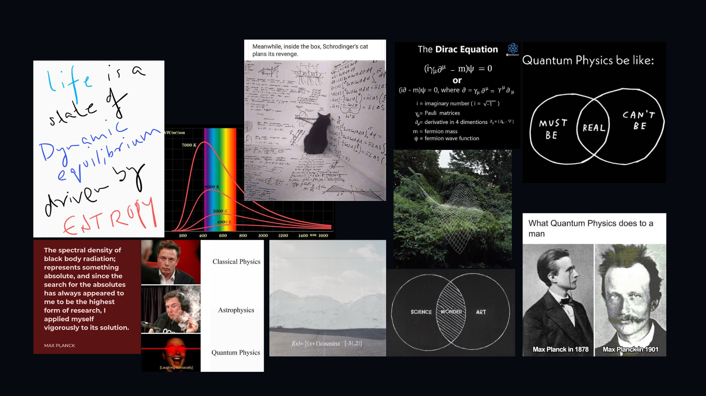

salut
i started learning physics, around when i was 14 years of age it was like a land of fairytales for me.
i thought that particles travel in a defined straight path and they were expected to follow the same path
but thats when quantam slapped me in the face, with even weirder things like the double slit experiment. i was flabbergasted by the fact that particles can behave like waves and waves can behave like particles. it was a whole new world of possibilities.
and then i thought, what if we are all just particles in a universe that is a simulation? what if we are all just bits of information in a computer program? what if our reality is just a hologram projected by some advanced civilization?
learning that particles exists as both wave and particle was no less than a door to new possibilities, it opened door to more thoughts, more experiments and at the same time more confusion going around because there wan't any concrete experiments and theory to describe it further.
so as to satisfy my own curiosities and the surfers like you reading this, i'll be covering Quantam Mechanics in a series of posts, i will be discussing about the quantam world, the developments around it and how it is not what we think it is.
so whenever we look at the light and the path travelled by it, lets say from point A to point B, we would see that it is the most optimised path, but did it really optimise the path? or did it just take the path that it had to take because it was obeying local rules?
the fact that we only see it as a single path is the biggest illusion nature has ever come up with
picture this : you heat an iron rod it glows red, then orange, then white. pretty straightforward, right? but when scientists tried to model this glow-called blackbody radiation the math went off the rails.
According to classical physics, energy emitted at higher frequencies should have been infinite. That would mean, brace yourself every object should be glowing like the sun all the time.
This disaster was famously nicknamed the “ultraviolet catastrophe”. In 1900, Max Planck, trying to fix the math (not to break physics), introduced a wild idea: Energy is not continuous. It comes in tiny packets, or quanta.
He introduced the now-legendary formula:
E = nhf
And poof—blackbody radiation suddenly made sense.
Planck did not fully believe his own solution. He treated it like a math trick, not a worldview shift. But unknowingly, he’d started a scientific revolution.
Planck’s idea was not just a fix. It implied something way deeper:
Nature isn't smooth and analog—it's chunky. Like cosmic Legos.
This idea — the quantization of energy, was a big slap to classical physics’ face. It forced scientists to reconsider everything they thought they knew.
It was not just about glowing metal rods. It was the first crack in a wall that had stood for centuries.
So here we are: 1900s, one awkward formula later, and the universe has officially started acting weird. This was not the end of the story. It was just the prologue.
In the next post, we will dive into how Einstein made light a particle, how de Broglie made particles a wave, and how reality got really… wobbly.
image below added(made with lots of love and efforts T_T)
(please drop some suggestions in my dms to improve this page.)
. -. -..